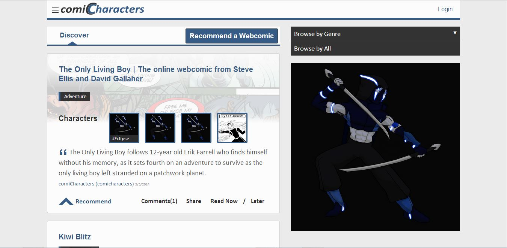

My name is Sheldon Lloyd. I a full-stack web designer. Growing up I have always considered myself a hobbyist comic creator. Although I got my first taste of programming in high school it wasn't until college that I discovered that I might have a talent in it as well.
My love of comics and a budding interest in coding formed the perfect marriage. This gave birth to my passion for web design and development. This is especially true if you consider how similar creating a website is to creating a comic book. The story, art, design, and layout of a comic are much like the design and UX stage of creating a website. Then there is the logo and landing page which is like the cover of a comic. One could even argue that the process of writing dialogue is akin to coding
I have created a webcomic CMS and a webcomic bookmarking site. I have many other projects on the horizon. I aim to get a job as a full-stack web developer or designer. My dream is to one day turn one of my projects into a company.
My background allows me to join a team as a designer who knows how to code or a developer who understands design.
WebcomicX is an opensource somewhat opinionated webcomic content management system built using C# and Razor. It uses XML instead of a SQL database.
Case Study
Learning from the success and failures of comiCharacters I made my next project WebcomicX opensource and moved away from the idea of following MVP principles to the T.
I wanted to create WebcomicX to be a CMS option that is not heavyweight like Wordpress. The first step in accomplishing this was removing the database. This eliminates the need to set up a database so WebcomicX will work out of the box. A side benefit of not having a database is that server cost can potentially be cheaper.
Since WebcomicX is targeted towards publishing webcomics I could focus on optimizing it for that purpose. This meant that I could do things like added captions making webcomics more accessible in terms of aligning with WCAG guidelines.
I also wanted to make things easier not just for the readers but for creators as well. Many creators like to organize.
Not everyone can or wants to use CSS and HTML to edit their own website for their comic. This why WebcomicX also has a customization feature. This had the most extensive work put into it. I had to make it as easy as possible to edit and preview a theme without making it live. I normally like to make sites usable without javascript. Unfortunately, the only way to make it work was to use a combination of JavaScript and C# along with cookies.
Doing research I found that a lot of webcomic creators tend to create a character profile page. To make this process easier the CMS also comes with a built-in character management system.
Beacause WebcomicX is focused on webcomics the blogging feature that comes with is bare bones. This is why I added the ability to link to your blogger, medium, or Wordpress blog.
In future releases, I plan on switching from XML to JSON making it a more standard Headless CMS.
A webcomic recommendation website the lets people discover, collect, and recommend comics from around the web.
Case Study
comiCharacters was made in response to me seeing a need for a place to help with mainly the promotion and to lesser degree discover of webcomics. There were not many solutions available at the time. The websites that did exist at the time was outdated.
At the time of comiCharacters inception, it was a website in which post and discover both webcomics and the characters they belong to the comic, Hence the name comiCharacters. Upon learning about starting with an MVP so as not to confuse user about what your product is meant to do.
What comicharacters was original supposed to look like
I choose one feature -- recommendation and double down on it. This meant removing any friction for recommending a webcomic. I also remove some images and decreased the size of other images. Leaving only what was necessary to the user. This was mainly to increase the google speed score of the site.
Ultimately condensing comiCharacters down to its MVP was the downfall as having characters along with the comic added to its uniqueness.
This is a “Meta-analysis” case study of the SPA portfolio in which you are reading this in.
Details
A pure CSS single page application(SPA) portfolio site template that uses the :target selector to navigate pages and flexbox for the layout but degrades gracefully.
Case Study
I created a portfolio site not only for myself but for others as well so it needed to have decent backward compatibility for older browsers(IE 8 and up). This way the CSS will degrade gracefully in an older browser and if needed — it can be progressively enhanced with JavaScript.
The best way to do this while maintaining good usability was to have the home page also act as the navigation menu. It has four separate cards one for a resume, about page, recent projects, and blog posts.
The Html is organized so that the page starts with the content (about, resume and projects) and at the bottom are the Navigation cards.
This serves 2 purposes the first is that it allows people that don’t have target enabled browsers to get straight to the content. It also allows the main navigation to be easily hidden when someone navigates to one of the views using the target selector .view:taget~.main-nav.
To maintain a comfortable reading experience the copy is no more than 700 pixels wide. To keep consistency with the cards when viewing the contents of the cards while in desktop view the header is left-aligned while the copy is centered but perceived to be to the right when there is enough space.
This is a set of adpative logos for a hypthical company called CNS
Case Study
CNS is a hypothitical company I created that creates multiple products. I wanted to have a logo that could adaptate to the design of each of these products
Empress Art
Details
This a logo I made for my cousin's bussines
Case Study
This is the second version of the design. She asked for redesign because she wanted it to be more feminine. The letter A is in the shape of a art pen nib and is shown the process of complete the logo. The words empress art is surrounded by an representing the artists having a good eye for detail or good art.
Cyber.Beast
Details
This a logo I made for my comic Cyber.Beast
Case Study
The webcomic is creative commons lincences so I added creative commons elblem to the middle of the logo to represent the preiod
ComicPlus logo
Details
This a logo for comicplus a CMS for webcomics I am creating. It is a new version of the webcomicx CMS I created before
Case Study
The c and the p of the logo combines to create a speach bubble and plus sign using negative space. The I and the L of te logo shapes into a drawing untensil
She is a charcter I redesigned for my cyber.beast comic
Case Study
She has a drone on her finger she can fuse with called a cyber.beast. It is a spider drone hence why she is spinning it on her finger tip as if she is spinning a web
Jax
Details
Charcter I created for my cyber.beast comic
Case Study
He is holding a drone called a cyber.beast. I gave him an armadillo lizard which can also be thought of has a dragon in his world. Since the curl into a ball as a defense I figured it would be perfect to turn into a drone which are in the shape of a ball.
Kyshumu
Details
He is a charcter I redesigned for my cyber.beast comic
Case Study
He is in what is called hyperdrive mode when he fuses with a cyber.beast envoloping him in an armour modeled after the animal he fuses with. Being a lion using the element of fire it turned out great as it allowed me to draw the fire in the shape of his fur.
Minia
Details
The main heroine in my cyber.beast comic
Case Study
I wanted to break the grid with this one. I used her drone modeled after a spine tailed swift with the lighting element to do it. I also wanted to see what it would look like if the characters from my world didn't hace pupils. The blue tips in her hair is a genetic defect. It's some thing I problably won't have in her future iterations
Ace
Details
Ace Inktober sketch
Case Study
A character I drew during inktober using the tranquil prompt. He is a another character from my cyber.beast story shown meditating. It's something they do before they fuse with their cyber.beast